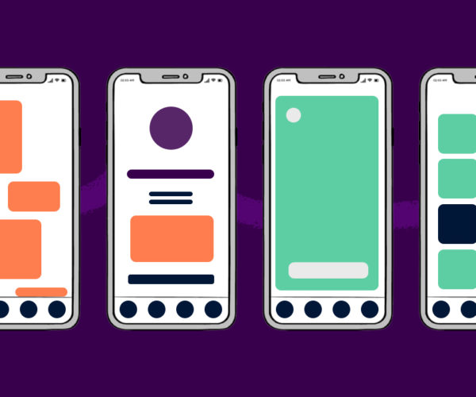
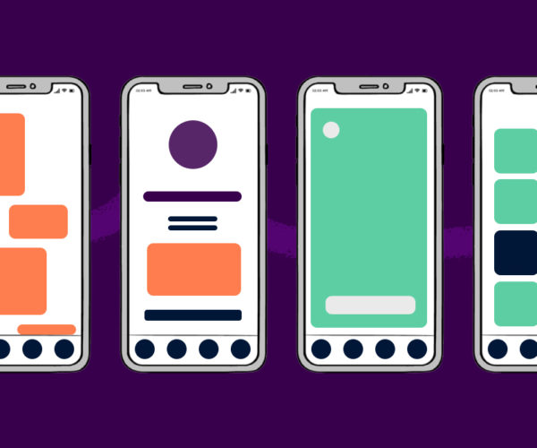
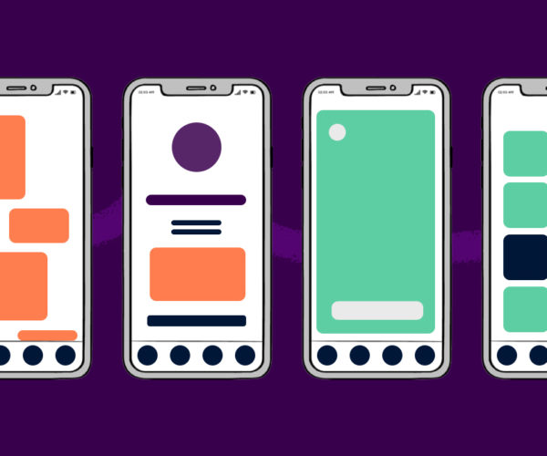
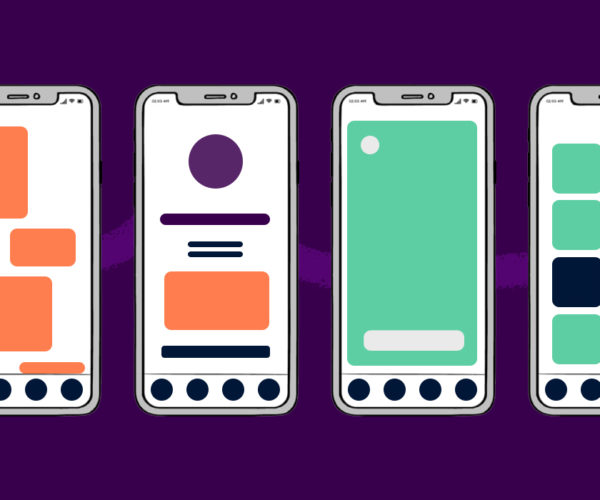

My dissertations is developing a prototype application focusing on Ux and Ui and my topic is events that are occuring around Malta and Gozo and taking this application to provide a personal approach to the consumer.